There exists several simple models of random walks. It can be either fixed stepsize but random directions or varying stepsize.
A simple model is that we assume each step is a step of size  , but with random directions. The position of this random walker at step
, but with random directions. The position of this random walker at step  is the summation of all the steps (vectors),
is the summation of all the steps (vectors),
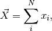
where  is the vector that represents step i.
is the vector that represents step i.
What we want to find out is the places that the random walker explored after steps. The corresponding quantity that represents it is 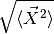.
From the idea of random walk, we know that
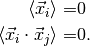
Thus
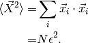
Then we find out that
(1)¶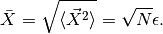
From the root-mean-squared distance Eq. (1) we can define the density of points. Suppose we have a continues version of this random walk. After time  , the random walker walked a distance . Meanwhile the random walker explored a region of radius 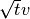, which corresponds to a volume 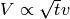. The density of walked points is defined as
, the random walker walked a distance . Meanwhile the random walker explored a region of radius 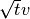, which corresponds to a volume 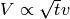. The density of walked points is defined as
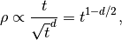
where is the dimension of the space.
We spot this critical dimension 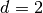.
 . This derivation is wrong about this critical case. It should be
. This derivation is wrong about this critical case. It should be © 2017, Lei Ma| GitHub| Statistical Mechanics Notebook | Index | Page Source| changelog| Created with Sphinx